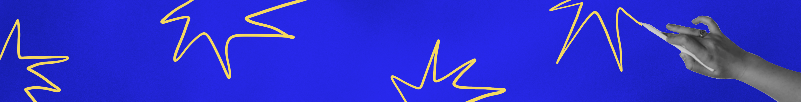
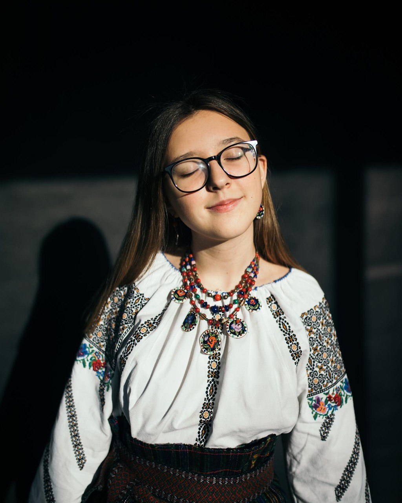
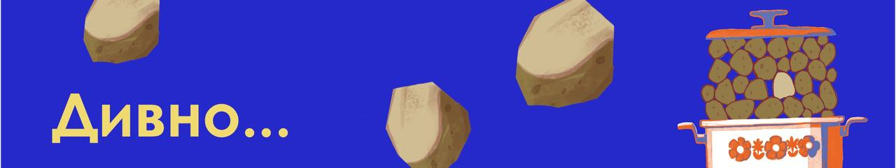
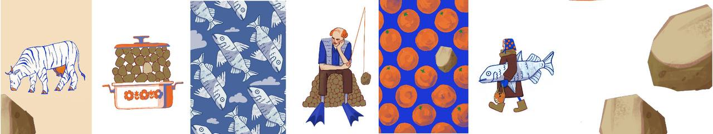
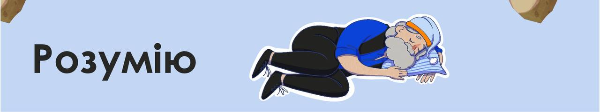
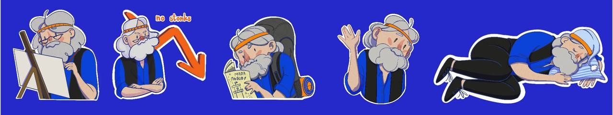
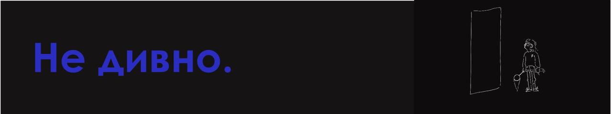
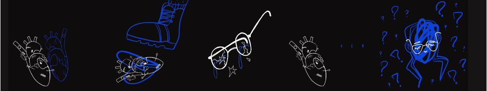

Привіт!
Я Анничка
це невеличкий сайт про мене поки я вчусь робити сайти
я студентка і пластунка зі Львова і дуже люблю своє місто. Зараз я навчаюсь на 4 курсі КЗЛОР ЛКДУМ ім. І. Труша на спеціальності "Графічний дизайн".
Окрім цього я вже як 9 років активно долучаюсь до громадської організації "Пласт" і недавно здобула найвищий ступінь - вірлиця.
Також займаюсь виховницькою діяльністю, тобто щотижня з групою дівчаток 6-8 років проводжу заняття та розказую про Пласт.

Чим я займаюсь окрім дизайну і пластування?
- вчусь грати на гітарі
- люблю подорожувати,
особливо ходити в гори
- люблю фотографувати,
особливо на плівку, щось є у ній магічне
- я дуже люблю ілюстрацію!
саме завдяки ній я почала малювати та вирішила вступити в коледж
- люблю котів!
- цікавлюсь історією мистецтва, особливо українського
частинка моїх ілюстративних проєктів:






Тяжко щось казати про себе насправді, тому відвідайте мою інсту та біханс!
А ще в мене зараз відкритий збір на тачку для нашого пластового друга на фронт, тому підтримайте копійчиною!